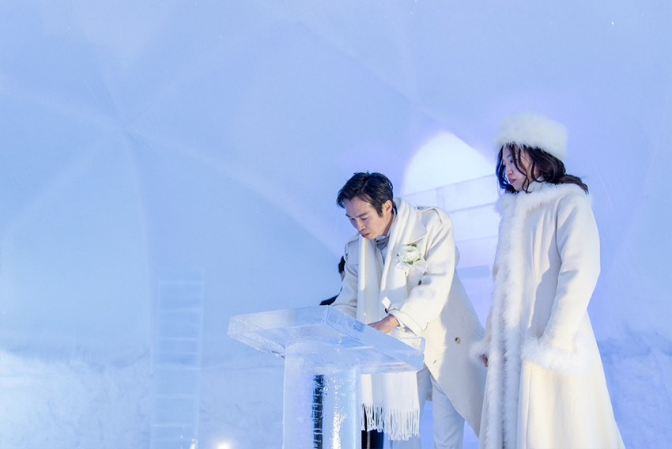

近年來，海外婚禮已不是新鮮事！有別於多數人選擇的海景婚禮、古堡婚禮等等…怕冷的我，竟然和先生選擇在零下三十度左右的北海道「冰之教堂」完成婚姻大事！
兩人從台灣帶了租借的婚紗、頭紗、西裝、皮鞋、永生花捧花等…共四個行李箱、兩個大背包、兩個大袋子一路闖關到新潟、再到北海道。
婚禮前一天，我們入住了北海道「TOMAMU星野度假村」，和牧師及工作人員確認完婚禮細節後，便走走逛逛美麗的白色渡假村，首先造訪了同樣座落在度假村內的安藤忠雄代表作「水之教堂」，其靜謐氛圍我很喜歡，也是我們當初在「冰之教堂」和「水之教堂」兩者間取捨後放棄的人氣結婚景點。
「冰之教堂」顧名思義，從裡到外，包括祭壇、座椅、十字架到走道等，皆由高純度的冰不斷堆積而成，在燈光的反射下，教堂變成閃耀著藍光的夢幻空間，每年冬天僅出現一個月時間，且造型年年不同，每次都是獨一無二。
婚禮當天早上，我們被自己的化妝師各自分別帶開準備著裝，目的是為了保持「First Look」的神祕感。日式婚禮妝感走自然淡雅路線，與我平常差異不大，但穿戴了婚紗頭紗後的樣子，是先生從沒看過的，於是「First Look」儀式順利爆笑結束了。接著，日籍攝影師開始為我們進行一系列的婚紗雪地外拍，由於天氣十分寒冷，已經挑了長袖婚紗的我，仍不禁忍著快流下來的鼻水邊拍照，兩人的表情都快凍僵了！
下午，回到飯店稍作休息後，傍晚又進行二次著裝，化妝師和助理特地幫我在婚紗和雪靴內都貼了暖暖包，再加上冰之教堂的新娘專屬行頭---保暖長大衣、毛茸茸白帽以及針織手套，因為夜晚的溫度比白天更低許多。
我們坐著車前往冰之教堂，下車後，走到教堂的途中，有許多旅客不吝對我們道聲「おめでとう」！攝影師也不免俗地先在教堂外幫我們取景拍照。
| 直到婚禮時間到，教堂門被開啟了，我們兩人慢慢攜手步入教堂，教堂內隨即傳來「You raise me up」現場風琴演奏， 並伴隨些許掌聲，Oh My God～我快哭了啦！ |
冰宮般的教堂氛圍搭配神聖的音樂，讓我們由衷生出肅穆敬虔之心！我和先生不約而同地露出凝重面色，一點都笑不出來！首先進行點燃蠟燭儀式，然後牧師開始領唱詩歌，怎料聖歌進行到一半，霎那間，我的淚水終於奪眶而出……
|  |
| 儀式持續進行，縱使新娘已哭得淅瀝嘩啦……雙方說完了最重要的一句「Yes！I do！」經牧師勸勉後，新人開始簽署結婚誓約書。 |
| 然後進行交換戒指，最後由牧師宣布我倆已結為夫妻！ |
| 喝完交杯酒，步出教堂後，最後一個儀式是新郎右手持著鈴鐺搖三下，當第三下鈴鐺響起， 漫天煙火便開始為我們綻放，彷彿在為我倆今後新的人生喝采！ |
翌日，我們從星野度假村內直接租車，開啟了我們的自駕蜜月旅行，享受了北海道的美食、美景及天然溫泉等……留下難忘的珍貴回憶！
 |